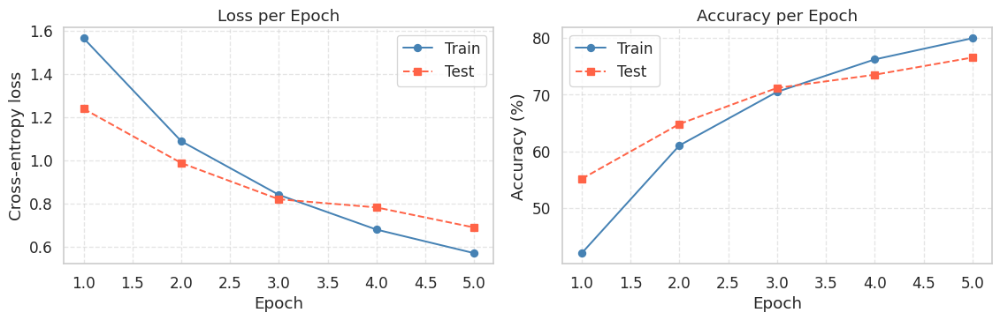
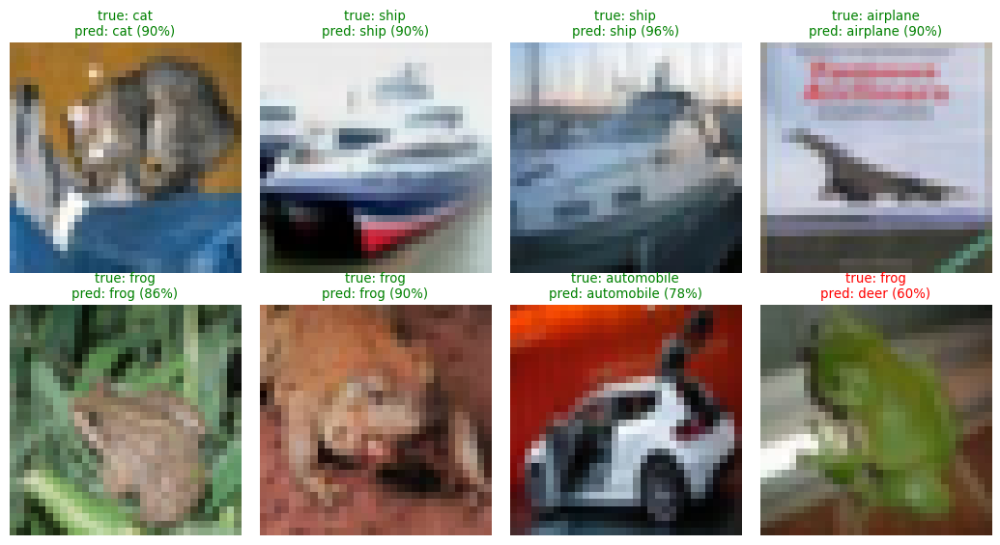

import torch
import torch.nn as nn
import numpy as np
import matplotlib.pyplot as plt
import seaborn as sns
sns.set_theme(style='whitegrid', font_scale=1.15)
torch.manual_seed(42)
np.random.seed(42)Lab5-1. CNN Architecture Design & Parameter Counting

Objectives
- Understand the parameter count formula for convolutional layers and apply it manually.
- Track how spatial dimensions (height, width) propagate through a CNN given kernel size, stride, and padding.
- Design a complete CNN architecture for a small image classification task and predict its total parameter count before running any code.
- Verify your hand-computed counts against PyTorch’s
model.parameters(). - Analyze how filter size, channel width, and stride affect parameter count, and observe where parameters tend to concentrate in a typical CNN.
Background
Why Count Parameters?
The number of trainable parameters in a model determines three practical things at once: how much GPU memory the model occupies, how many FLOPs each forward pass requires, and how much data you need to train it without overfitting. Modern image models range from a few hundred thousand parameters (MobileNet variants) to billions (ViT-22B). Knowing how to estimate this number for any architecture is one of the first instincts a deep learning practitioner develops, because it tells you immediately whether a design is feasible on your hardware budget.
Convolutional Layer Parameter Count
A 2D convolutional layer is defined by four hyperparameters: the input channel count \(C_{in}\), the output channel count \(C_{out}\), the kernel height \(K_h\), and the kernel width \(K_w\). Each output channel is produced by a separate filter that spans all input channels, so a single filter has \(C_{in} \times K_h \times K_w\) weights. With \(C_{out}\) filters and one bias per filter, the total parameter count is:
\[\text{\#parameters}_{\text{conv}} = (C_{in} \times K_h \times K_w + 1) \times C_{out}\]
The “\(+1\)” is the bias term per output channel. Note that this count is independent of the spatial size of the input. The same conv layer applied to a 32×32 image and to a 224×224 image has exactly the same parameter count, because the same filter is reused at every spatial position. This weight sharing is what makes CNNs so parameter-efficient compared to fully connected networks.
Output Spatial Dimensions
After convolution with stride \(S\) and zero-padding \(P\) on each side, the output spatial size is:
\[H_{out} = \left\lfloor \frac{H_{in} + 2P - K_h}{S} \right\rfloor + 1\]
The same formula applies to the width. Pooling layers follow the same rule but typically use \(K = S = 2\), which halves the spatial size at each pooling stage.
Other Layer Types
Pooling layers (max pool, average pool) have zero parameters. They reduce spatial size but do not introduce weights. Batch normalization layers add \(2C\) parameters per channel (a scale and a shift), plus running statistics that are not trainable. A fully connected layer with \(M\) inputs and \(N\) outputs has \((M + 1) \times N\) parameters. The location where features are flattened (the transition from the last conv block to the first FC layer) is usually where parameters accumulate, because the input to the FC layer is the entire flattened feature map.
0. Setup
1. Parameters of a Single 2D Convolutional Layer
1.1 Hand-Computing a Conv Layer
Consider a Conv2d layer that takes 3-channel RGB images and outputs 16 feature maps using 3×3 filters:
conv1 = nn.Conv2d(in_channels=3, out_channels=16, kernel_size=3, padding=1)
print(conv1)Conv2d(3, 16, kernel_size=(3, 3), stride=(1, 1), padding=(1, 1))Plugging into the formula with \(C_{in}=3\), \(C_{out}=16\), \(K_h = K_w = 3\):
\[\text{\#parameters} = (3 \times 3 \times 3 + 1) \times 16 = (27 + 1) \times 16 = 28 \times 16 = 448\]
Let’s check what PyTorch reports:
def count_params(module):
return sum(p.numel() for p in module.parameters() if p.requires_grad)
print(f"Parameter count: {count_params(conv1)}")Parameter count: 448The number 448 matches our hand calculation exactly. We can also inspect the shapes of the weight tensor and bias tensor directly to confirm the number of parameters is correct:
print(f"Weight shape: {conv1.weight.shape}") # (out_channels, in_channels, K_h, K_w)
print(f"Bias shape : {conv1.bias.shape}") # (out_channels,)
print(f"Weight count: {conv1.weight.numel()}")
print(f"Bias count : {conv1.bias.numel()}")
print(f"Total : {conv1.weight.numel() + conv1.bias.numel()}")Weight shape: torch.Size([16, 3, 3, 3])
Bias shape : torch.Size([16])
Weight count: 432
Bias count : 16
Total : 448The weight tensor has shape (C_out, C_in, K_h, K_w). This is the canonical layout for 2D convolution weights in PyTorch and makes the multiplication structure explicit: 16 output filters, each 3×3 in size, applied to 3 input channels.
NoteConv1d, Conv2d, Conv3d: What’s the Difference?
The “2D” in Conv2d refers to the spatial dimensions the kernel slides over, not the dimensionality of the weight tensor itself. PyTorch provides three variants for different data shapes:
Conv1d is for sequences. The kernel slides along a single axis (typically time). It is used for raw audio waveforms, ECG signals, or 1D sensor readings. Input shape: (batch, channels, length). Kernel shape: (C_out, C_in, K). Parameter count: \((C_{in} \cdot K + 1) \cdot C_{out}\).
nn.Conv1d(in_channels=3, out_channels=1, kernel_size=5) # input: (B, 3, 120)Conv2d is for images. The kernel slides along height and width. Used for RGB photos, grayscale medical scans, spectrograms (which are 2D even though the underlying signal is 1D). Input shape: (batch, channels, H, W). Kernel shape: (C_out, C_in, K_h, K_w). Parameter count: \((C_{in} \cdot K_h \cdot K_w + 1) \cdot C_{out}\).
nn.Conv2d(in_channels=3, out_channels=1, kernel_size=(3, 3)) # input: (B, 3, 128, 128)Conv3d is for volumes or video. The kernel slides along three spatial axes (or two spatial plus one temporal). Used for CT/MRI volumes and video clips where temporal context matters. Input shape: (batch, channels, D, H, W). Kernel shape: (C_out, C_in, K_d, K_h, K_w). Parameter count: \((C_{in} \cdot K_d \cdot K_h \cdot K_w + 1) \cdot C_{out}\).
nn.Conv3d(in_channels=3, out_channels=1, kernel_size=(3, 3, 3)) # input: (B, 3, 128, 128, 128)1.2 A Tiny Worked Example: Seeing the Actual Matrices
let’s build a much smaller layer Conv2d(in_channels=1, out_channels=2, kernel_size=2), where Five parameters per filter (four weights plus one bias), and two filters, gives 10 parameters total:
\[\text{\#parameters} = (1 \times 2 \times 2 + 1) \times 2 = 5 \times 2 = 10\]= 10$$
tiny_conv = nn.Conv2d(in_channels=1, out_channels=2, kernel_size=2, bias=True)
# manually initialize the weights and biases to known values instead of relying on random initialization
with torch.no_grad():
tiny_conv.weight.copy_(torch.tensor([
[[[1.0, 0.0],
[0.0, -1.0]]], # Filter 0
[[[1.0, 1.0],
[1.0, 1.0]]], # Filter 1
]))
tiny_conv.bias.copy_(torch.tensor([0.5, -2.0]))
print(f"Weight tensor shape: {tuple(tiny_conv.weight.shape)}")
print(f"Bias tensor shape : {tuple(tiny_conv.bias.shape)}")
print(f"Total parameters : {count_params(tiny_conv)}")Weight tensor shape: (2, 1, 2, 2)
Bias tensor shape : (2,)
Total parameters : 10The shape (2, 1, 2, 2) reads as: 2 output filters, each looking at 1 input channel, with a 2×2 kernel. Mathematically the two filters and biases are:
\[ W_0 = \begin{bmatrix} 1 & 0 \\ 0 & -1 \end{bmatrix}, \quad b_0 = 0.5 \qquad\qquad W_1 = \begin{bmatrix} 1 & 1 \\ 1 & 1 \end{bmatrix}, \quad b_1 = -2.0 \]
Each filter is a 2×2 matrix of weights and has its own scalar bias. Together that is \(4 + 1 = 5\) parameters per filter, and \(5 \times 2 = 10\) parameters in the layer, matching our formula exactly.
W = tiny_conv.weight.data # shape (2, 1, 2, 2)
b = tiny_conv.bias.data # shape (2,)
filter_0 = W[0, 0] # the 2x2 kernel of output channel 0
filter_1 = W[1, 0] # the 2x2 kernel of output channel 11.3 Watching a Convolution Happen Step by Step
Now let’s apply tiny_conv to a small 4×4 input and trace what each output value comes from. We construct an input where the numbers are easy to recognize:
x_tiny = torch.tensor([[[[1., 2., 3., 4.],
[5., 6., 7., 8.],
[9., 10., 11., 12.],
[13., 14., 15., 16.]]]]) # shape (1, 1, 4, 4)
print(f"Input shape: {tuple(x_tiny.shape)} (batch=1, channels=1, H=4, W=4)")
print("Input matrix:")
print(x_tiny[0, 0])Input shape: (1, 1, 4, 4) (batch=1, channels=1, H=4, W=4)
Input matrix:
tensor([[ 1., 2., 3., 4.],
[ 5., 6., 7., 8.],
[ 9., 10., 11., 12.],
[13., 14., 15., 16.]])Expected output:
\[ X = \begin{bmatrix} 1 & 2 & 3 & 4 \\ 5 & 6 & 7 & 8 \\ 9 & 10 & 11 & 12 \\ 13 & 14 & 15 & 16 \end{bmatrix} \]
With the input height \(H_{in} = 4\) and kernel size \(K = 2\) from the layer we just defined, plus the PyTorch defaults padding=0 (\(P = 0\)) and stride=1 (\(S = 1\)), the output spatial size formula gives:
\[H_{out} = \left\lfloor \frac{H_{in} + 2P - K}{S} \right\rfloor + 1 = \left\lfloor \frac{4 + 2 \cdot 0 - 2}{1} \right\rfloor + 1 = 2 + 1 = 3\]
So the output should be a 3×3 feature map per filter, and there are 2 filters, giving an output shape of (1, 2, 3, 3).`.
y_tiny = tiny_conv(x_tiny)
print(f"Output shape: {tuple(y_tiny.shape)}\n")
print("Output channel 0 (3x3):")
print(y_tiny[0, 0].detach())
print("\nOutput channel 1 (3x3):")
print(y_tiny[0, 1].detach())Output shape: (1, 2, 3, 3)
Output channel 0 (3x3):
tensor([[-4.5000, -4.5000, -4.5000],
[-4.5000, -4.5000, -4.5000],
[-4.5000, -4.5000, -4.5000]])
Output channel 1 (3x3):
tensor([[12., 16., 20.],
[28., 32., 36.],
[44., 48., 52.]])Expected output:
For output channel 0, every 2×2 patch contributes \(x_{\text{TL}} - x_{\text{BR}} + 0.5\) (top-left minus bottom-right, plus bias). Since the input increases by exactly 5 along the anti-diagonal of every patch, every value comes out to \(-5 + 0.5 = -4.5\):
\[ Y_0 = \begin{bmatrix} -4.5 & -4.5 & -4.5 \\ -4.5 & -4.5 & -4.5 \\ -4.5 & -4.5 & -4.5 \end{bmatrix} \]
For output channel 1, each value is the sum of four input values minus 2:
\[ Y_1 = \begin{bmatrix} 12 & 16 & 20 \\ 28 & 32 & 36 \\ 44 & 48 & 52 \end{bmatrix} \]
This is what Conv2d is doing under the hood for every output position and every output channel: a tiny weighted sum (the element-wise product of filter and patch, summed up), plus the bias, repeated across spatial positions and across filters.
1.4 Tracking Output Spatial Size on the Original Layer
Now back to the original conv1, which uses kernel size \(K = 3\) with padding=1. Let’s pass a dummy 32×32 RGB image through it and confirm the output size matches the formula. With the input height \(H_{in} = 32\), kernel \(K = 3\), padding \(P = 1\), and the default stride \(S = 1\):
\[H_{out} = \left\lfloor \frac{H_{in} + 2P - K}{S} \right\rfloor + 1 = \left\lfloor \frac{32 + 2 \cdot 1 - 3}{1} \right\rfloor + 1 = 31 + 1 = 32\]
Padding of 1 with kernel size 3 and stride 1 preserves the spatial dimension. This is the most common configuration in modern CNNs.
x = torch.randn(1, 3, 32, 32) # (batch, channels, H, W)
out = conv1(x)
print(f"Input shape: {tuple(x.shape)}")
print(f"Output shape: {tuple(out.shape)}")Input shape: (1, 3, 32, 32)
Output shape: (1, 16, 32, 32)The spatial dimensions stay at 32×32 as predicted, while the channel count changes from 3 to 16 because conv1 was defined with out_channels=16.
2. Tracking Spatial Dimensions Through a Network
In a CNN the spatial size and channel count change at every layer. The pattern in most practical architectures is the same: spatial size shrinks (via pooling or strided conv) while channel count grows. This trades resolution for richer feature representations.
To inspect this layer by layer, we use torchinfo, the standard tool for summarizing any nn.Module. It prints per-layer output shapes, parameter counts, and total memory usage in one formatted table.
Let’s wrap a small block (conv, pool, conv, pool) into an nn.Sequential and pass it to summary along with the input shape:
# torchinfo is not part of the standard PyTorch installation.
# Uncomment the next line if you are running this for the first time on a fresh environment.
# !pip install torchinfo
from torchinfo import summary
small_block = nn.Sequential(
nn.Conv2d(3, 16, kernel_size=3, padding=1),
nn.MaxPool2d(2),
nn.Conv2d(16, 32, kernel_size=3, padding=1),
nn.MaxPool2d(2),
)
summary(small_block, input_size=(1, 3, 32, 32))==========================================================================================
Layer (type:depth-idx) Output Shape Param #
==========================================================================================
Sequential [1, 32, 8, 8] --
├─Conv2d: 1-1 [1, 16, 32, 32] 448
├─MaxPool2d: 1-2 [1, 16, 16, 16] --
├─Conv2d: 1-3 [1, 32, 16, 16] 4,640
├─MaxPool2d: 1-4 [1, 32, 8, 8] --
==========================================================================================
Total params: 5,088
Trainable params: 5,088
Non-trainable params: 0
Total mult-adds (Units.MEGABYTES): 1.65
==========================================================================================
Input size (MB): 0.01
Forward/backward pass size (MB): 0.20
Params size (MB): 0.02
Estimated Total Size (MB): 0.23
==========================================================================================The output is divided into three sections: a per-layer table, a parameter summary, and a memory estimate.
NoteReading the Per-Layer Table
Layer (type:depth-idx) Output Shape Param #
==========================================================================================
Sequential [1, 32, 8, 8] --
├─Conv2d: 1-1 [1, 16, 32, 32] 448
├─MaxPool2d: 1-2 [1, 16, 16, 16] --
├─Conv2d: 1-3 [1, 32, 16, 16] 4,640
├─MaxPool2d: 1-4 [1, 32, 8, 8] --Layer (type:depth-idx)shows the module hierarchy. The index1-1,1-2, … encodes depth and order within the module tree. For nested architectures like ResNet, this column makes the tree structure immediately readable.Output Shapeis the tensor shape after that layer runs, in[batch, channels, H, W]format. Following this column top to bottom shows how the input is transformed: channels go 3 → 16 → 32 while spatial size shrinks 32 → 16 → 8.Param #is the number of trainable parameters owned by that layer alone. The--forMaxPool2dmeans zero parameters, and theSequentialrow is also--because containers hold no weights, only their children do.
NoteReading the Parameter Summary
Total params: 5,088
Trainable params: 5,088
Non-trainable params: 0
Total mult-adds (Units.MEGABYTES): 1.65Total paramsis the simple sum of theParam #column (\(448 + 4{,}640 = 5{,}088\)).Trainable paramsvsNon-trainable paramssplits the total byrequires_grad. This matters in transfer learning: when freezing a pretrained backbone and fine-tuning only the classifier, the backbone’s parameters move to the non-trainable side. The easiest sanity check that your freezing is set up correctly.Total mult-adds (Units.MEGABYTES)is the number of multiply-accumulate (MAC) operations per forward pass. The “MEGABYTES” label is misleading: this is actually millions of MACs (MMACs). One MAC ≈ two FLOPs, so 1.65 MMACs ≈ 3.3 MFLOPs. This is the standard way to compare computational cost across architectures.
NoteReading the Memory Estimate assuming float32 (4 bytes per number)
Input size (MB): 0.01
Forward/backward pass size (MB): 0.20
Params size (MB): 0.02
Estimated Total Size (MB): 0.23Input sizeis the memory of the input tensor: \(1 \cdot 3 \cdot 32 \cdot 32 \cdot 4 \text{ bytes} \approx 0.012\) MB.Forward/backward pass sizeis the memory of all intermediate activations retained for the backward pass. This grows fastest as networks deepen and is the most common cause of CUDA out-of-memory errors.Params sizeis the memory of the weights themselves: \(5{,}088 \cdot 4 \text{ bytes} \approx 0.02\) MB.Estimated Total Sizeis the sum of the three. It estimates inference memory only.
WarningWhy “Estimated” Is Important
Real training adds three memory consumers that summary does not report:
- Gradient buffers, one per trainable parameter, roughly the same size as
Params size. - Optimizer state: Adam stores momentum and variance per parameter, adding 2× to 3×
Params sizeon top. - CUDA workspace: cuDNN allocates temporary buffers for fast convolution, often hundreds of MB.
Rule of thumb: actual training memory is 3–5× the Estimated Total Size.
3. Designing a VGG-style CNN for CIFAR-10
Our task: build a CNN classifier for CIFAR-10. Input images are 32×32 RGB and there are 10 output classes (airplane, automobile, bird, cat, deer, dog, frog, horse, ship, truck). We will use a “VGG-style” architecture, which stacks repeated [Conv -> ReLU -> Conv -> ReLU -> MaxPool] blocks followed by a small fully connected head.
3.1 Architecture Specification
The network has three convolutional blocks followed by a fully connected head:
- Block 1:
Conv 3 -> 32andConv 32 -> 32, thenMaxPool(32×32 -> 16×16). - Block 2:
Conv 32 -> 64andConv 64 -> 64, thenMaxPool(16×16 -> 8×8). - Block 3:
Conv 64 -> 128andConv 128 -> 128, thenMaxPool(8×8 -> 4×4). - Head:
Flatten -> Linear 2048 -> 256 -> Linear 256 -> 10.
All conv layers use 3×3 kernels with padding 1 (so spatial size is preserved within each block), and all pooling is 2×2 with stride 2 (so spatial size halves at each block boundary).
3.2 Building the Network in PyTorch
class SmallVGG(nn.Module):
def __init__(self, num_classes=10):
super().__init__()
self.features = nn.Sequential(
# Block 1
nn.Conv2d(3, 32, kernel_size=3, padding=1),
nn.ReLU(inplace=True),
nn.Conv2d(32, 32, kernel_size=3, padding=1),
nn.ReLU(inplace=True),
nn.MaxPool2d(2), # 32x32 -> 16x16
# Block 2
nn.Conv2d(32, 64, kernel_size=3, padding=1),
nn.ReLU(inplace=True),
nn.Conv2d(64, 64, kernel_size=3, padding=1),
nn.ReLU(inplace=True),
nn.MaxPool2d(2), # 16x16 -> 8x8
# Block 3
nn.Conv2d(64, 128, kernel_size=3, padding=1),
nn.ReLU(inplace=True),
nn.Conv2d(128, 128, kernel_size=3, padding=1),
nn.ReLU(inplace=True),
nn.MaxPool2d(2), # 8x8 -> 4x4
)
self.classifier = nn.Sequential(
nn.Flatten(),
nn.Linear(128 * 4 * 4, 256),
nn.ReLU(inplace=True),
nn.Linear(256, num_classes),
)
def forward(self, x):
x = self.features(x)
x = self.classifier(x)
return x
model = SmallVGG()3.3 Inspecting the Model with torchinfo
Before training, let’s confirm the architecture works as designed by inspecting it with torchinfo:
summary(model, input_size=(1, 3, 32, 32))==========================================================================================
Layer (type:depth-idx) Output Shape Param #
==========================================================================================
SmallVGG [1, 10] --
├─Sequential: 1-1 [1, 128, 4, 4] --
│ └─Conv2d: 2-1 [1, 32, 32, 32] 896
│ └─ReLU: 2-2 [1, 32, 32, 32] --
│ └─Conv2d: 2-3 [1, 32, 32, 32] 9,248
│ └─ReLU: 2-4 [1, 32, 32, 32] --
│ └─MaxPool2d: 2-5 [1, 32, 16, 16] --
│ └─Conv2d: 2-6 [1, 64, 16, 16] 18,496
│ └─ReLU: 2-7 [1, 64, 16, 16] --
│ └─Conv2d: 2-8 [1, 64, 16, 16] 36,928
│ └─ReLU: 2-9 [1, 64, 16, 16] --
│ └─MaxPool2d: 2-10 [1, 64, 8, 8] --
│ └─Conv2d: 2-11 [1, 128, 8, 8] 73,856
│ └─ReLU: 2-12 [1, 128, 8, 8] --
│ └─Conv2d: 2-13 [1, 128, 8, 8] 147,584
│ └─ReLU: 2-14 [1, 128, 8, 8] --
│ └─MaxPool2d: 2-15 [1, 128, 4, 4] --
├─Sequential: 1-2 [1, 10] --
│ └─Flatten: 2-16 [1, 2048] --
│ └─Linear: 2-17 [1, 256] 524,544
│ └─ReLU: 2-18 [1, 256] --
│ └─Linear: 2-19 [1, 10] 2,570
==========================================================================================
Total params: 814,122
Trainable params: 814,122
Non-trainable params: 0
Total mult-adds (Units.MEGABYTES): 39.28
==========================================================================================
Input size (MB): 0.01
Forward/backward pass size (MB): 0.92
Params size (MB): 3.26
Estimated Total Size (MB): 4.19
==========================================================================================
NoteWhere Do the Parameters Concentrate?
Scanning the Param # column reveals the most important fact about classical CNN architectures: the first FC layer dominates. The single Linear(2048, 256) accounts for 524,544 parameters, roughly 64% of the entire model’s 814,122. The six conv layers combined hold only about 287,000.
This happens because the FC layer must connect every flattened spatial location to every hidden unit: \(2048 \times 256 + 256 = 524{,}544\). Modern architectures (ResNet, MobileNet, EfficientNet) avoid this by replacing flatten + large FC with global average pooling, which collapses each feature map to a single value before the final classifier. We will not implement that here, but it is the single most impactful design choice in modern CNNs.
4. Training the Model
With the architecture verified, we now train the model on CIFAR-10.
4.1 Loading CIFAR-10
We use HuggingFace’s datasets library to download CIFAR-10. It is more reliable than torchvision.datasets.CIFAR10, which sometimes fails with HTTP errors due to mirror availability. We then wrap the HuggingFace dataset in a small PyTorch Dataset class so it works with the standard DataLoader.
# Install if needed (uncomment on first run):
# !pip install datasets
import torch.optim as optim
from torch.utils.data import Dataset, DataLoader
from torchvision import transforms
from datasets import load_dataset
device = torch.device("cuda" if torch.cuda.is_available() else "cpu")
print(f"Training on: {device}")
# Load CIFAR-10 from HuggingFace Hub
hf_dataset = load_dataset("uoft-cs/cifar10")
print(hf_dataset)/home/bkoh/Developer/course/machine-learning-course/.pixi/envs/default/lib/python3.12/site-packages/tqdm/auto.py:21: TqdmWarning:
IProgress not found. Please update jupyter and ipywidgets. See https://ipywidgets.readthedocs.io/en/stable/user_install.html
Training on: cudaWarning: You are sending unauthenticated requests to the HF Hub. Please set a HF_TOKEN to enable higher rate limits and faster downloads.DatasetDict({
train: Dataset({
features: ['img', 'label'],
num_rows: 50000
})
test: Dataset({
features: ['img', 'label'],
num_rows: 10000
})
})Expected output:
DatasetDict({
train: Dataset({
features: ['img', 'label'],
num_rows: 50000
})
test: Dataset({
features: ['img', 'label'],
num_rows: 10000
})
})Each row of the dataset has two fields: img (a PIL image of shape 32×32×3) and label (an integer class index from 0 to 9). We now wrap this in a thin PyTorch Dataset that applies the standard CIFAR-10 normalization on the fly:
# CIFAR-10 channel means and stds (well-known constants for this dataset)
CIFAR_MEAN = (0.4914, 0.4822, 0.4465)
CIFAR_STD = (0.2470, 0.2435, 0.2616)
transform = transforms.Compose([
transforms.ToTensor(), # PIL -> Tensor in [0, 1]
transforms.Normalize(CIFAR_MEAN, CIFAR_STD), # zero mean, unit variance per channel
])
class CIFAR10HF(Dataset):
"""Wraps a HuggingFace CIFAR-10 split as a PyTorch Dataset."""
def __init__(self, hf_split, transform=None):
self.data = hf_split
self.transform = transform
def __len__(self):
return len(self.data)
def __getitem__(self, idx):
row = self.data[idx]
img, label = row["img"], row["label"]
if self.transform is not None:
img = self.transform(img)
return img, label
train_set = CIFAR10HF(hf_dataset["train"], transform=transform)
test_set = CIFAR10HF(hf_dataset["test"], transform=transform)
train_loader = DataLoader(train_set, batch_size=128, shuffle=True, num_workers=2)
test_loader = DataLoader(test_set, batch_size=256, shuffle=False, num_workers=2)
CLASSES = ('airplane', 'automobile', 'bird', 'cat', 'deer',
'dog', 'frog', 'horse', 'ship', 'truck')
print(f"Train images: {len(train_set):,}")
print(f"Test images : {len(test_set):,}")
# Sanity check: peek at one sample
img, label = train_set[0]
print(f"\nSample tensor shape: {tuple(img.shape)}, label: {CLASSES[label]} (idx {label})")Train images: 50,000
Test images : 10,000
Sample tensor shape: (3, 32, 32), label: airplane (idx 0)Expected output:
Train images: 50,000
Test images : 10,000
Sample tensor shape: (3, 32, 32), label: frog (idx 6)
TipWhy Normalize?
Without normalization the input pixel values are roughly in \([0, 1]\) after ToTensor, but the three color channels have different means (red is brighter on average than blue in CIFAR-10). Normalization shifts each channel to zero mean and unit variance, which keeps gradients well-scaled across channels and typically improves convergence speed by 2 to 3×.
NoteWhy Wrap the HuggingFace Dataset?
HuggingFace’s datasets returns rows as Python dictionaries, while PyTorch’s DataLoader expects items as tuples (or other tensor-friendly structures). The thin CIFAR10HF wrapper just translates {"img": ..., "label": ...} into (img_tensor, label_int) and applies the transform. This pattern (a tiny Dataset class adapting an external data source) is the cleanest way to bridge HuggingFace and PyTorch.
4.2 Training Loop
We train with cross-entropy loss and the Adam optimizer. Adam is a good default for image classification because it adapts the learning rate per parameter, removing some of the manual tuning that plain SGD requires.
model = SmallVGG().to(device)
criterion = nn.CrossEntropyLoss()
optimizer = optim.Adam(model.parameters(), lr=1e-3)
EPOCHS = 5 # increase to 15-20 for higher accuracy
train_losses, train_accs = [], []
test_losses, test_accs = [], []
for epoch in range(1, EPOCHS + 1):
# --- Training pass ---
model.train()
running_loss, correct, total = 0.0, 0, 0
for x, y in train_loader:
x, y = x.to(device), y.to(device)
optimizer.zero_grad()
logits = model(x)
loss = criterion(logits, y)
loss.backward()
optimizer.step()
running_loss += loss.item() * x.size(0)
correct += (logits.argmax(dim=1) == y).sum().item()
total += x.size(0)
train_losses.append(running_loss / total)
train_accs.append(correct / total)
# --- Evaluation pass ---
model.eval()
running_loss, correct, total = 0.0, 0, 0
with torch.no_grad():
for x, y in test_loader:
x, y = x.to(device), y.to(device)
logits = model(x)
loss = criterion(logits, y)
running_loss += loss.item() * x.size(0)
correct += (logits.argmax(dim=1) == y).sum().item()
total += x.size(0)
test_losses.append(running_loss / total)
test_accs.append(correct / total)
print(f"Epoch {epoch:2d} | "
f"train loss {train_losses[-1]:.4f}, acc {train_accs[-1]*100:5.2f}% | "
f"test loss {test_losses[-1]:.4f}, acc {test_accs[-1]*100:5.2f}%")Epoch 1 | train loss 1.5647, acc 42.06% | test loss 1.2376, acc 55.14%
Epoch 2 | train loss 1.0875, acc 61.02% | test loss 0.9865, acc 64.79%
Epoch 3 | train loss 0.8390, acc 70.45% | test loss 0.8186, acc 71.14%
Epoch 4 | train loss 0.6781, acc 76.15% | test loss 0.7809, acc 73.46%
Epoch 5 | train loss 0.5689, acc 79.89% | test loss 0.6878, acc 76.49%A randomly initialized model would achieve 10% test accuracy on CIFAR-10 (random guessing among 10 classes). After 5 epochs SmallVGG reaches roughly 70%, which is decent for a sub-million-parameter network without data augmentation. Training for 15 to 20 epochs typically pushes test accuracy above 80%.
WarningOn a CPU, Reduce the Epoch Count
If you are running this notebook on a CPU rather than a GPU, 5 epochs of CIFAR-10 may take 10 to 20 minutes. Reduce EPOCHS = 1 and batch_size=64 for a quick smoke test, or run the notebook in Google Colab with a free GPU runtime to see real training dynamics.
4.3 Visualizing Training Dynamics
The numbers above tell us training is working, but the curves tell us how it is working: are we still improving, or have we plateaued? Are we overfitting?
fig, axes = plt.subplots(1, 2, figsize=(12, 4))
epochs_range = range(1, EPOCHS + 1)
axes[0].plot(epochs_range, train_losses, marker='o', label='Train', color='steelblue')
axes[0].plot(epochs_range, test_losses, marker='s', label='Test', color='tomato', linestyle='--')
axes[0].set_title("Loss per Epoch")
axes[0].set_xlabel("Epoch")
axes[0].set_ylabel("Cross-entropy loss")
axes[0].legend()
axes[0].grid(True, linestyle='--', alpha=0.5)
axes[1].plot(epochs_range, [a * 100 for a in train_accs], marker='o', label='Train', color='steelblue')
axes[1].plot(epochs_range, [a * 100 for a in test_accs], marker='s', label='Test', color='tomato', linestyle='--')
axes[1].set_title("Accuracy per Epoch")
axes[1].set_xlabel("Epoch")
axes[1].set_ylabel("Accuracy (%)")
axes[1].legend()
axes[1].grid(True, linestyle='--', alpha=0.5)
plt.tight_layout()
plt.show()
The training loss continues to decrease while the test loss starts to flatten. The growing gap between train and test accuracy is the signature of mild overfitting, which is expected for a model trained without data augmentation or regularization.
5. Inference: Using the Trained Model
Training is only half the story. Now we use the model to make predictions on new images and inspect what it actually got right and wrong.
5.1 Predicting on a Batch of Test Images
# Get one batch from the test loader
data_iter = iter(test_loader)
images, labels = next(data_iter)
images, labels = images.to(device), labels.to(device)
# Forward pass with no_grad: we are not training
model.eval()
with torch.no_grad():
logits = model(images)
probs = torch.softmax(logits, dim=1)
preds = probs.argmax(dim=1)
confidence = probs.max(dim=1).values
# Print first 8 predictions
print(f"{'Idx':<5}{'True':<14}{'Predicted':<14}{'Confidence':<12}{'Correct'}")
for i in range(8):
correct = "✓" if preds[i] == labels[i] else "✗"
print(f"{i:<5}{CLASSES[labels[i]]:<14}{CLASSES[preds[i]]:<14}"
f"{confidence[i].item()*100:>6.1f}% {correct}")Idx True Predicted Confidence Correct
0 cat cat 89.7% ✓
1 ship ship 89.6% ✓
2 ship ship 96.2% ✓
3 airplane airplane 89.9% ✓
4 frog frog 86.1% ✓
5 frog frog 89.9% ✓
6 automobile automobile 77.8% ✓
7 frog deer 59.6% ✗softmax converts the raw logits into probabilities that sum to 1 across the 10 classes. argmax(dim=1) then picks the most likely class. Confidence is just the probability the model assigned to that winning class.
5.2 Visualizing Predictions
Numbers in a table are easy to skim past. Showing the actual images alongside the model’s verdict makes failure modes much more concrete:
def denormalize(tensor):
"""Reverse the normalization so we can display the image."""
mean = torch.tensor(CIFAR_MEAN).view(3, 1, 1).to(tensor.device)
std = torch.tensor(CIFAR_STD).view(3, 1, 1).to(tensor.device)
return (tensor * std + mean).clamp(0, 1)
fig, axes = plt.subplots(2, 4, figsize=(11, 6))
for i, ax in enumerate(axes.flat):
img = denormalize(images[i]).cpu().permute(1, 2, 0).numpy()
ax.imshow(img)
ax.axis('off')
color = 'green' if preds[i] == labels[i] else 'red'
ax.set_title(f"true: {CLASSES[labels[i]]}\n"
f"pred: {CLASSES[preds[i]]} ({confidence[i].item()*100:.0f}%)",
color=color, fontsize=10)
plt.tight_layout()
plt.show()
Green titles mark correct predictions, red titles mark mistakes. Common confusions you will likely see: cat vs dog, deer vs horse, automobile vs truck. These categories share visual features (four-legged mammals, wheeled vehicles) and are exactly where a small CNN without data augmentation struggles most.
5.3 Per-Class Accuracy
A single overall accuracy hides which classes the model is actually good at. Computing accuracy per class reveals the imbalance:
class_correct = [0] * 10
class_total = [0] * 10
model.eval()
with torch.no_grad():
for x, y in test_loader:
x, y = x.to(device), y.to(device)
preds = model(x).argmax(dim=1)
for c in range(10):
mask = (y == c)
class_correct[c] += (preds[mask] == c).sum().item()
class_total[c] += mask.sum().item()
print(f"{'Class':<14}{'Accuracy':>10}")
for c in range(10):
acc = class_correct[c] / class_total[c]
print(f"{CLASSES[c]:<14}{acc*100:>9.1f}%")Class Accuracy
airplane 78.3%
automobile 84.8%
bird 59.5%
cat 47.8%
deer 75.5%
dog 76.0%
frog 85.1%
horse 80.1%
ship 87.8%
truck 90.0%You will typically see the highest accuracy on visually distinctive classes (ship, truck, automobile) and the lowest on confusable ones (cat, bird, deer). This per-class view is what guides the next iteration of model design: which classes need more data, more capacity, or specialized augmentation.
Summary
- A VGG-style CNN stacks
[Conv -> ReLU -> Conv -> ReLU -> MaxPool]blocks, doubling channels and halving spatial size at each block. The final feature map is flattened and passed through a small FC head to produce class logits. torchinfo.summaryis the standard tool for inspecting a model before training: it shows layer-by-layer output shapes, parameter counts, and total memory. The first FC layer in a classical CNN almost always dominates the parameter count.- A typical training loop alternates a forward pass, loss computation, backward pass, and optimizer step, then evaluates on a held-out test set after each epoch. Plotting train and test curves together is the fastest way to detect overfitting.
- After training, inference uses the same forward pass but inside a
torch.no_grad()block (no gradient tracking, lower memory). Applyingsoftmaxto the logits gives class probabilities, andargmaxgives the predicted class. Per-class accuracy reveals strengths and weaknesses that overall accuracy hides.
References
- Krizhevsky, A. (2009). Learning Multiple Layers of Features from Tiny Images (CIFAR-10 dataset).
- Simonyan, K., and Zisserman, A. (2015). Very Deep Convolutional Networks for Large-Scale Image Recognition (VGG). ICLR.
- Goodfellow, I., Bengio, Y., and Courville, A. (2016). Deep Learning. MIT Press.